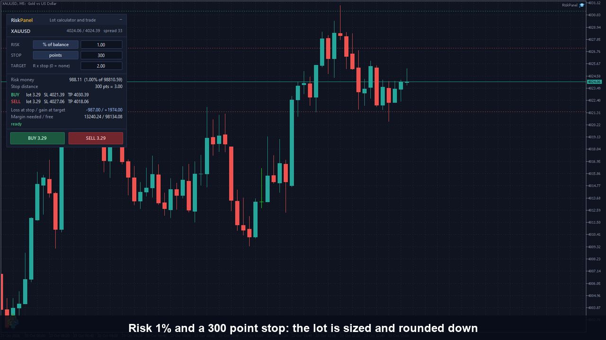
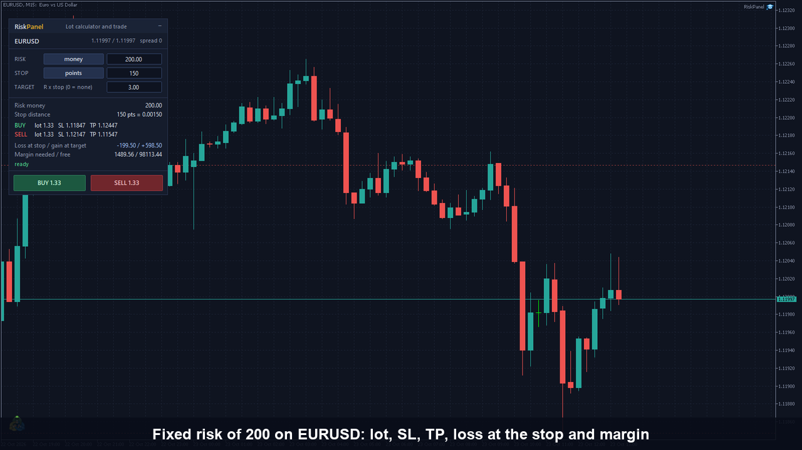
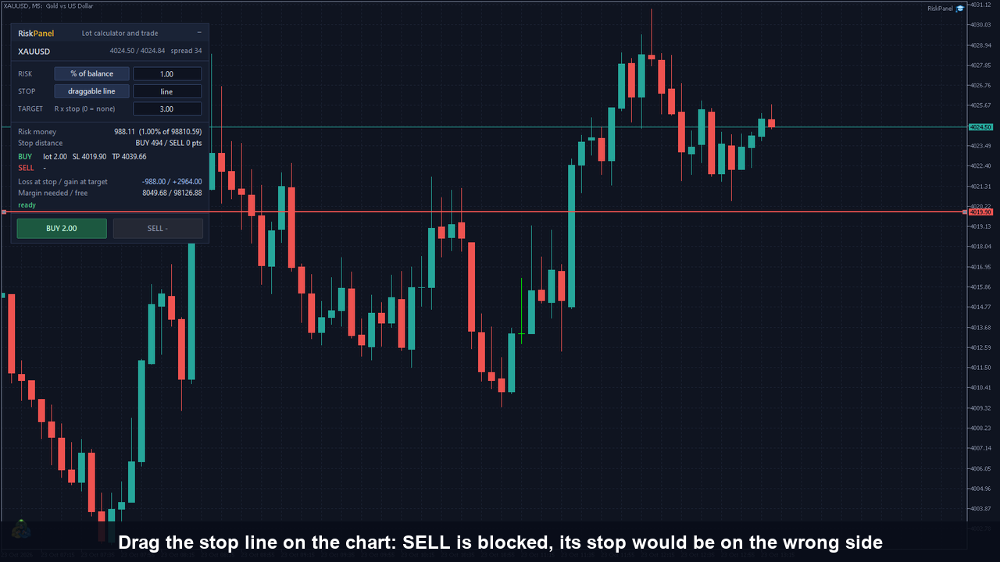
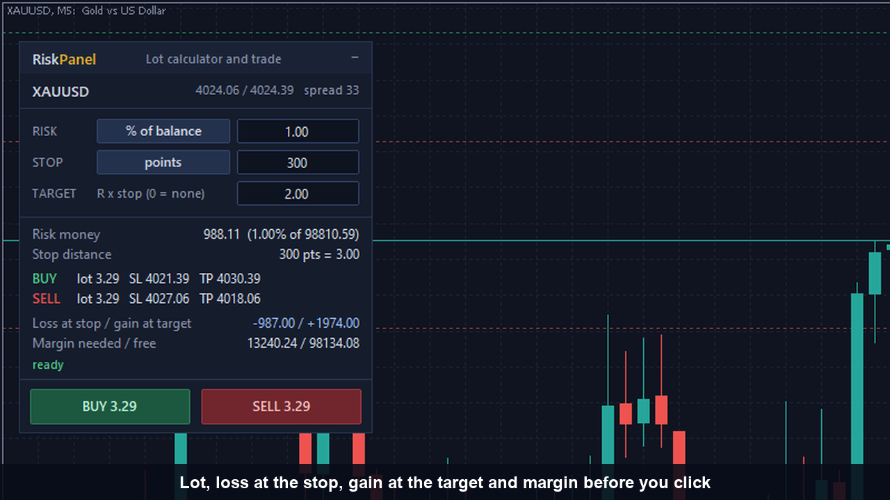

RiskPanel: never risk more than you chose
You pick the risk (a percentage of your account or a fixed amount of money) and the stop. RiskPanel sizes the lot so that, if the stop is hit, the loss is at most the amount you chose, rounded down to the broker's volume step, and shows it on the chart before you click. Then BUY or SELL opens the trade with that stop and an optional take profit. It does not decide what to trade and gives no signals.




Who it is for
Discretionary traders who want every trade to carry the same planned loss, on forex, metals or indices, without doing lot maths by hand.
Key features
Lot from your stop
The loss between the real entry and the real stop is priced by the terminal's own profit calculation, so it fits forex, metals, indices and any account currency.
Always rounded down
Rounded down to the volume step, then priced again at the exact lot, so the loss at the stop is never above the money you chose.
Hard risk cap
A maximum risk (5% of the base by default) applies in both modes.
Margin check
The margin the trade needs is compared with your free margin before the order.
Blocked buttons with a reason
When a side cannot be traded, its button turns grey and the panel shows a one-line reason.
Self-checks
On start the panel tests its own maths and, on the first tick, more cases against the broker's pricing. If one fails, the buttons are disabled.
Stop and target
Stop as points or a draggable chart line. Target as a multiple of the stop (R), or none. Optional confirmation before each order.
Honest limits
- Slippage, commission and swap are not part of the lot; a real stop-out can lose a little more than the amount you chose.
- On a netting account a new trade adds to the existing position and the stop and take profit apply to the whole position.
- The broker's total volume limit per symbol is not checked; the broker rejects such an order.
- Brokers that refuse stops on market orders will reject the order, since it carries the stop and take profit.
- It does not manage the trade after it opens, gives no signals and promises no profit.
- In the Strategy Tester it opens demo trades so you can see it work; on a live or demo account it trades only when you press a button.
The source code is private; this page shows what the product does, not its code. Screenshots are from a MetaTrader 5 demo account.
Want RiskPanel on your terminal?
Available on the MQL5 Market. Risk mode, stop, target and cap are inputs. For a version adapted to your own rules, message me. Price: 30 USD.
Get it on the MQL5 Market Message on Telegram WhatsApp Email See my CV